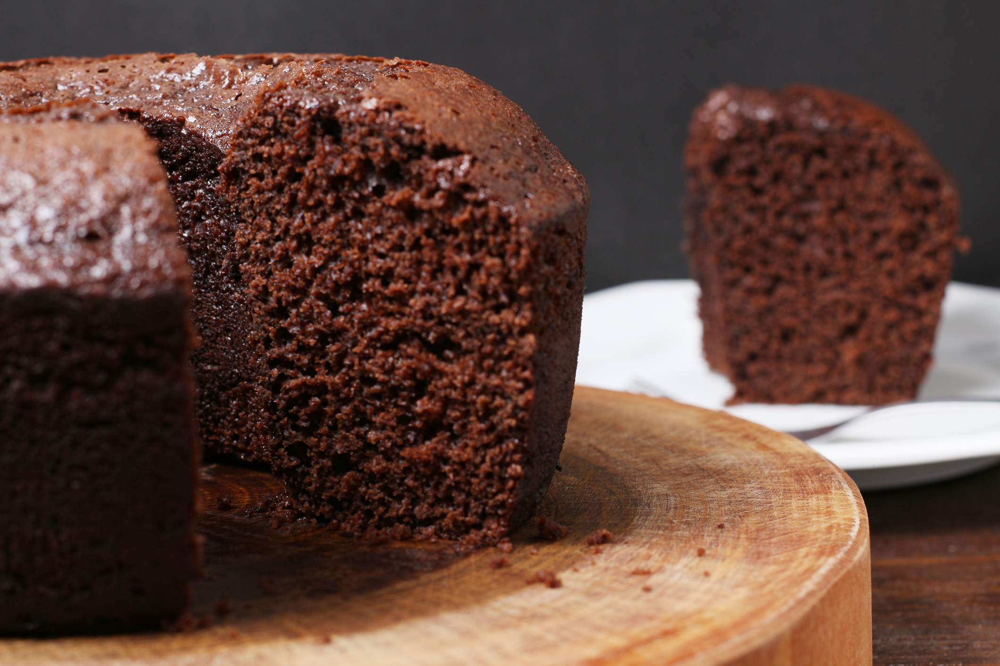

Bolo de Chocolate Simples

Bolo de chocolate simples que pode ser feito à mão ou na batedeira. Receita da minha família.
Detalhes da Receita
Curso
Bolo
Culinária
Brasileira
Palavras-chave
bolo simples, chocolate
Tempo de Preparo
30 minutos
Tempo de Cozimento
40 minutos
Tempo Total
1 hora e 10 minutos
Porções
8
Autor
Carla Duclos
Ingredientes
- 3 ovos gemas e claras separadas
- 100 gramas de manteiga ou margarina
- 2 xícaras de açúcar
- 2 xícaras de farinha de trigo
- 1 xícara de chocolate em pó
- 1 xícara de leite morno
- 1 colher de sopa de fermento em pó
Instruções
- Pré-aqueça o forno a 200 graus C.
- Unte uma forma de buraco no meio com manteiga e farinha.
- Bata as claras em neve e reserve.
- Bata bem as gemas, o açúcar e a manteiga até obter um creme clarinho.
- Misture a farinha, o chocolate em pó e o leite intercalando. Se estiver utilizando a batedeira, selecione a velocidade baixa.
- Incorpore delicadamente o fermento e as claras em neve à massa.
- Despeje a mistura na forma e leve para assar por cerca de 30 a 40 minutos. Teste com um palito de madeira. Faça um furo na massa com o palito e ele deve sair limpo quando o bolo estiver pronto.
- Retire do forno e cubra com um pano de prato limpo.
- Espere esfriar e desenforme. (Essa parte nem sempre acontece. ADORO cortar o bolo na forma ainda quente.)
Notas
Observação: A xícara usada é uma xícara medida de 240 ml.
Por Chef Guilherme Leite em 16 de Dezembro de 2023